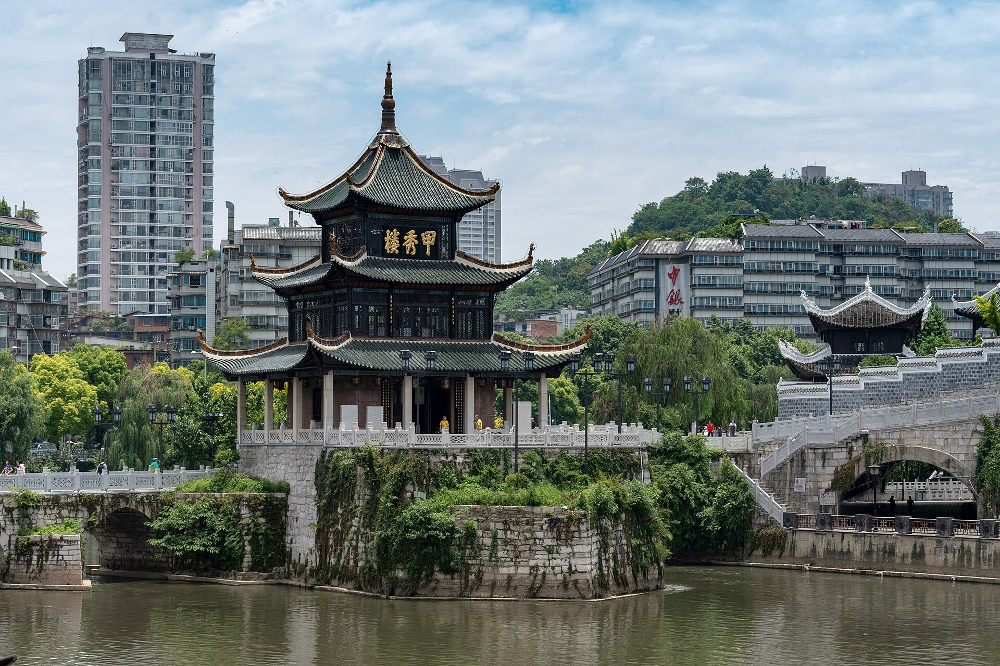
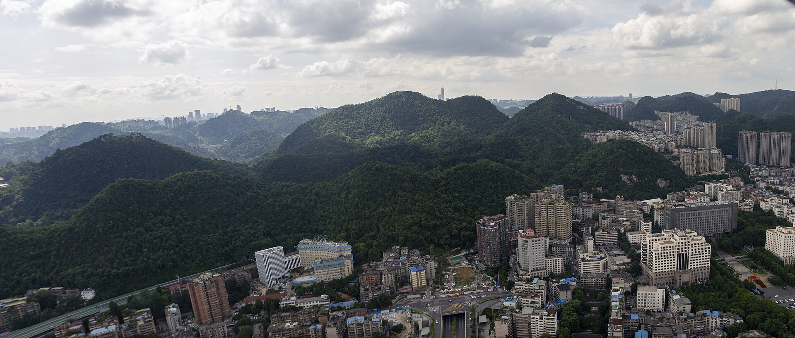
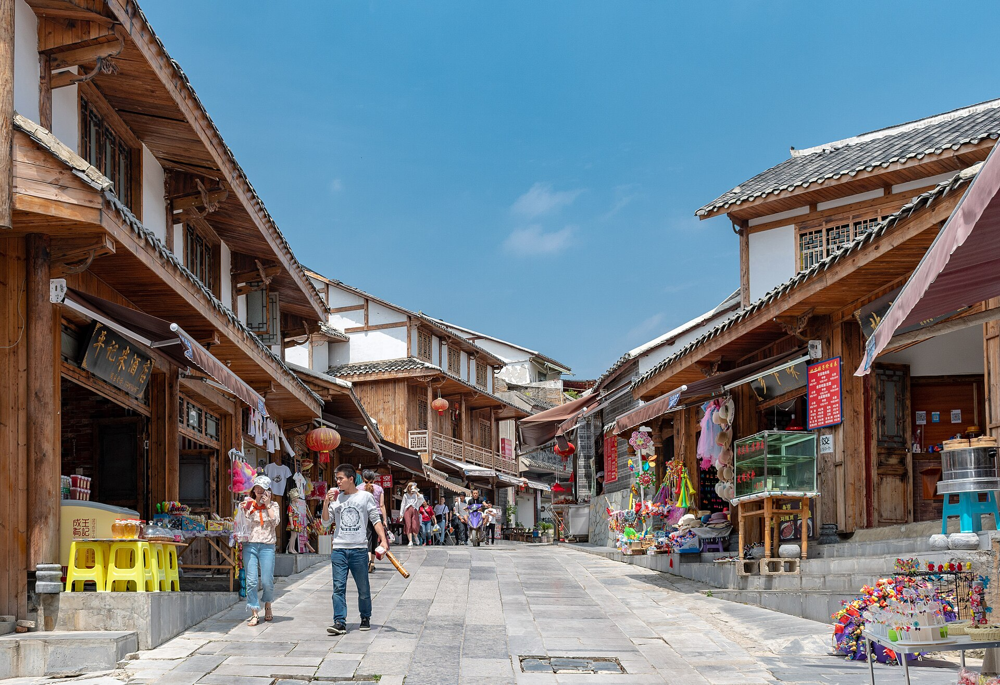
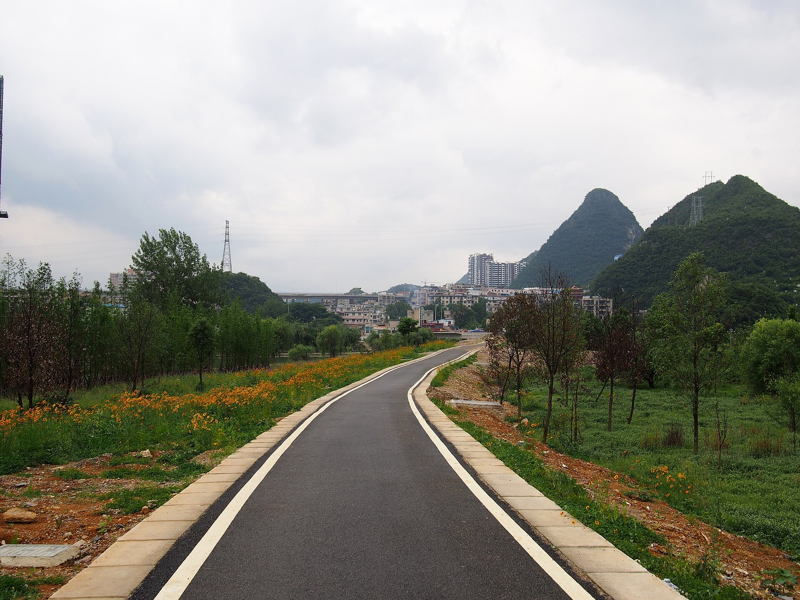
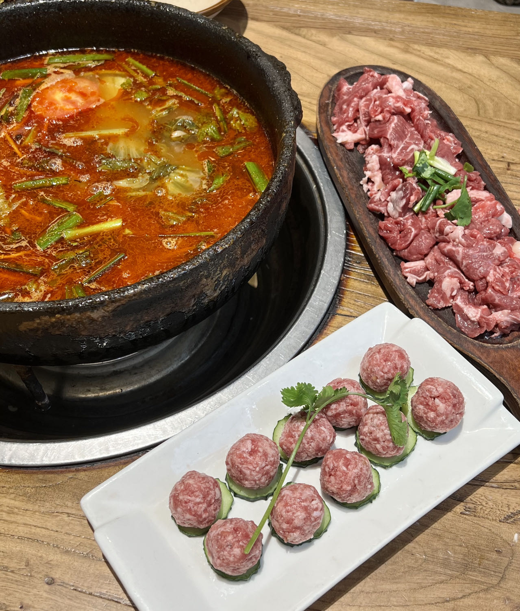

绿意，离城市很近。
贵阳的山地、森林与城区相互交织。从街区走向黔灵山，看到的是树木和山路；沿着南明河走，又能看见城市的另一面。自然风景并不只在远方，也在这座城的生活半径里。
03家乡 / 贵州贵阳
山水在城里，
烟火在街巷。
我是贵阳人。想用几处风景、几样喜欢的食物，把这座城市介绍给你。既看甲秀楼与青岩古镇，也看看城市里的山林，尝尝酸与辣交织的贵州味道。

甲秀楼初建于明万历二十六年（1598），立在南明河上，是贵阳的城市地标。楼阁、浮玉桥与水面连成一景，周围则是继续生长的现代城市。历史与日常，在这里挨得很近。
01城市底色
贵阳是贵州省会，位于云贵高原东部。“林城”这个名字，是认识家乡的一条线索。
贵阳的山地、森林与城区相互交织。从街区走向黔灵山，看到的是树木和山路；沿着南明河走，又能看见城市的另一面。自然风景并不只在远方，也在这座城的生活半径里。
贵阳以凉爽的夏季气候而闻名，也是人们熟悉的避暑城市。高原的风、夏季的云与雨，和山林一起构成它的城市印象。“爽爽贵阳”，说的不只是一个名字，也是一种可以感受的气候特点。
看过地标，还可以从一碗粉、一份街头小吃认识贵阳。酸、辣与各式蘸水，让这里的饮食有了鲜明的性格。我喜欢的家乡味道，也有很具体的名字：酸粉、辣子鸡、洋芋粑，还有一盘烤鱼。
02山水与老城
从城市里的森林，到石板街上的老建筑，再到沿溪展开的湿地，家乡有不止一种风景。

黔灵山公园把青山、湖水、树林与古寺放在一处，也是贵阳很有代表性的城市公园。山路与林荫步道让人走近自然，园内的弘福寺又为这片山林添了一层人文意味。
这张全景里，山与楼房相互交错。它让“山在城中、城在林中”不再只是一句形容，而是可以直接看见的贵阳轮廓。

青岩古镇始建于明洪武十一年（1378），早期与军事屯驻有关。城墙、石板路、牌坊与明清建筑，让这里保存了可步行阅读的历史。走进街巷，老建筑与今天的店铺、行人并排出现，古镇仍有生活的温度。

花溪国家城市湿地公园沿花溪河串起十里河滩、花溪公园等景观。这里能看见高原喀斯特地貌，也有河流湿地、树木与田园。沿步道散步，或在骑行途中停下来看看，是认识贵阳自然风景的另一种方式。
03我喜欢的味道
这六样，是我特地选进家乡页的贵州美食。从贵阳的日常，延伸到安顺的一份裹卷。

贵州的味道有很多层次：酸粉里的发酵风味、酸汤里的鲜香、糍粑辣椒的浓郁，还有洋芋粑和烤鱼的热气。
一锅酸汤牛肉，把酸香与鲜味放到一起。和下面这六个具体的名字一样，它也是我想分享的贵州味道。
薄薄的米皮，裹起配菜与酱料，柔韧、爽脆和鲜香汇在一口里。它来自贵州安顺，也是我喜欢的贵州味道之一。
米皮与配菜 / 一口裹起来酸粉本身经过发酵，带有轻微酸味。配上油辣椒、花生或酸萝卜等佐料，一碗看起来朴素的米粉，也能有清楚的地方风味。
发酵的微酸 / 粉里的家乡味贵州辣子鸡的一个特点，是用糍粑辣椒与鸡肉一起烹制。辣椒、姜蒜的香气融进鸡肉，滋味浓郁，带着黔菜鲜明的香辣底色。
糍粑辣椒 / 浓郁的香辣酸汤的酸香与牛肉的鲜味，在一口锅里相遇。红酸汤是常见的做法之一，再搭配一碟蘸水，就能尝到贵州饮食里层次丰富的酸与辣。
酸汤与牛肉 / 鲜香的一锅贵州常把土豆叫作洋芋。洋芋做成粑，煎炸出焦香的外层，里面仍然软糯；配一点辣椒调味，是很有街头烟火气的小吃。
外层焦香 / 里面软糯留一手，是我喜欢的烤鱼名字，也给这份清单留下了一个具体的个人选择。鱼肉和配菜在烤盘里聚到一起，热气与香辣的滋味很有存在感。
烤鱼与配菜 / 热气腾腾的一盘04从这里出发
我从贵阳出发，去上海读法学，赴重庆服役两年，退伍后回校完成学业。后来，在东莞、郑州的工作经历，又让我看见不同的城市与生活。
介绍家乡，也是在介绍我从哪里来。山水、城市与喜欢的味道，和我的经历放在一起，才构成这个个人网站里更完整的我。
继续读我的个人经历05字里行间
试问岭南应不好，
却道：此心安处是吾乡。
苏轼《定风波》
最近爱读的一句词。关于远行，也关于心安。美食清单按我的个人喜好选取；风景与食物介绍依据上述资料整理。四张风景照片与一张酸汤牛肉照片来自 Wikimedia Commons，并非本人拍摄。本站使用缩小版本，按版式显示或裁切，保留原始色彩；各图片继续适用原授权，黔灵山与酸汤牛肉图片的派生版本适用 CC BY-SA 4.0。